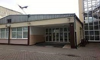
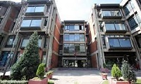
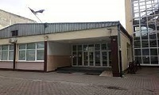
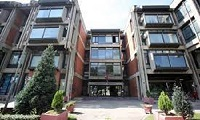
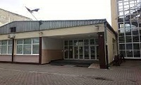
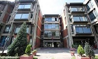
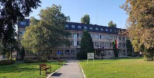
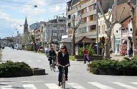
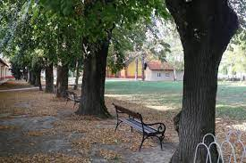

past,present and future
Name and surname: Maja Petrović
Class: IV4
E-mail: HERE
Town: Bačka Palanka
Primary school: OŠ"Vuk Karadžić"
High school: Gymnasium "20.oktobar"
Future: Faculty of Philosophy


past,present and future
Bačka Palanka is a town and municipality located in the South Bačka District of the autonomous province of Vojvodina, Serbia. It is situated on the left bank of the Danube. In 2011 the town had a total population of 28,239, while Bačka Palanka municipality had 55,528 inhabitants. Archeologists have proved that people have lived in the area for centuries. There are many archaeological objects from the Stone Age, Bronze Age, Iron Age and Roman period. In the 11th century, this area was populated by Hungarians and Serbs.Bačka Palanka is first mentioned as a settlement in 1486, as a suburb of Ilok called Iločka. Until the 16th century, this area was administered by the Kingdom of Hungary. At the beginning of the 16th century, the village was the property of a landowner Laurence of Ilok, a duke of Syrmia. It was destroyed by the Ottomans after The Battle of Mohács in 1526, but was then rebuilt as a small Ottoman fortress named Palanka. During the Ottoman administration (16th-17th century), Palanka was mostly populated by ethnic Serbs. In 1687 Palanka was absorbed into the Habsburg Monarchy and more Orthodox Serbs settled here. Palanka was then mentioned as a small town with 167 houses, all of which were Serb (1720 census data).Later, Germans, Slovaks and Hungarians settled here as well. It was part of the Habsburg Military Frontier from 1702 to 1744. Nova Palanka (New Palanka) was founded between 1765 and 1770, 2 kilometers away from the original Palanka (which then became known as Stara Palanka - Old Palanka) and Nemačka Palanka (German Palanka) was founded by Danube Germans in 1783. Those three towns became one city, Bačka Palanka, in the 20th century. Palanka's industrial development started in 1765, when a brick plant was built. It got its first post office in 1828. In 1875, one of the first libraries in Vojvodina was opened. In 1884 the Sintelon company was founded. In 1886, the first state school started functioning. By the year of 1894, a railway was built from Bačka Palanka to Feketić and a first phone call was made to Novi Sad. In the second half of the 19th century, the German population became more numerous than the Serbian. According to the 1910 census, the population of Stara Palanka was mostly Serb, while populations of Nova Palanka and Nemačka Palanka were mostly German. The city was under Habsburg administration until 1918, when it became part of the Kingdom of Serbs, Croats and Slovenes (later renamed as Yugoslavia). During the World War II (from 1941 to 1944), it was under Axis (Horty Hungary) occupation. In 1944, one part of Bačka Palanka's citizens of German ethnicity left the city, together with the defeated German army. As a consequence of the war, the site of a post-World War II work camp for the remaining ethnic Germans (Donauschwaben) was formed here under a new communist administration.[citation needed] After the work camps were dissolved (in 1948), the remaining German population was expelled from Yugoslavia. To replace the Germans, 3,609 (mostly Serb) colonists were settled in the town after World War II. Most of them originated from Bosnia and Herzegovina. During the 1990s, about 5,000 refugees from Croatia and Bosnia moved to Bačka Palanka because of the Yugoslav wars. During the NATO bombing in 1999, Bačka Palanka was bombed by NATO twice, on 2 and 27 April. On both occasions the target was the Ilok–Bačka Palanka Bridge. It was only damaged, but not destroyed. In 2002, 4 tons of fish stew were cooked at Kaloš Čarda at the Bager Lake in Bačka Palanka and it entered the Guinness Book of Records.
 Tourism is developed in Bačka Palanka. The city is famous for Tikvara, a Natural Monument. Tikvara is a Danube lake. Tikvara covers an area of 5 square kilometres (1.9 square miles). The Tikvara Resort complex is built along the lake for practicing various sports, recreational and entertaining activities. There are 33 archeological sites in the municipality. It is also known for Karađorđevo, which has a hunting ground and horse farm. People enjoy racing derbies in Karađorđevo. At the time of Serbia's emancipation, engraver Marko Vujatović worked on the intricate iconostasis of the Serbian Orthodox Church of St. John the Baptist. Bačka Palanka's Serbian church is one of the oldest churches in Vojvodina some built on foundations of temples of even earlier times. The north of the town is the Bagremara forest.
 Industry in Bačka Palanka started developing in the 18th century. The first companies were built in the second half of the 18th century. A brick plant was opened in 1765, and a tobacco storehouse was opened a year later. In 1974 the Bridge of Youth was built to connect Bačka Palanka and Ilok in Croatia. Today, Bačka Palanka falls among the ten most developed municipalities in Vojvodina. Bačka Palanka municipality is an agricultural and industrial center. The main industries are food, metallurgy, textiles, electronic and machine industry. The most famous factories are Enia, Sintelon, Tarkett, Nectar, Dunavprevoz, AD Bačka, Carlsberg, Marina, Majevica, Plattner, Žitoprodukt, Budućnost and others.